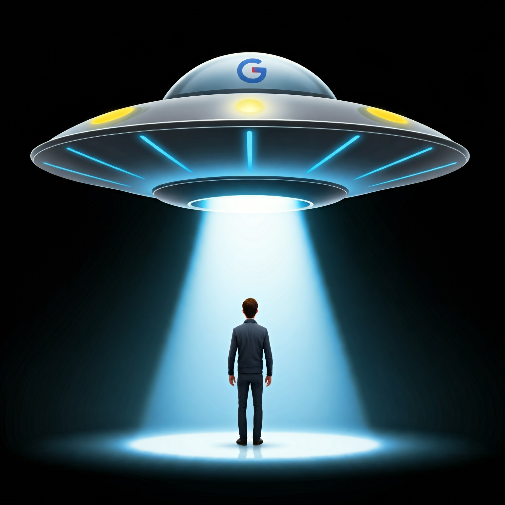

Dylan Page “Abducted” by Google’s Alien Overlords After Ditching Pixel—Did They Clone Him?
The Disappearance
Dylan Page, TikTok’s favorite news commentator, mysteriously vanished for a full week, leaving fans and followers in suspense. Was it a break from his heated rivalry with The Daily News? Or did something more bizarre happen?
It all started when Dylan decided to ditch his Apple iPhone for a Google Pixel. After filming a few TikToks with the Pixel, fans immediately started calling out the poor camera quality. Dylan, unimpressed with the phone, posted a giveaway video offering the Pixel to one lucky follower. But before anyone could claim their prize—poof—Dylan disappeared from TikTok completely. No posts, no updates. He was gone.
The Alien Connection
But Dylan’s disappearance wasn’t just a random break. Sources say it might have been an “abduction” of sorts, but not by aliens looking to probe him—instead, a group of extraterrestrial beings allegedly run Google, and they weren’t happy about Dylan’s negative review of the Pixel. So they took him for some sort of “tech intervention” to fix their phone’s camera quality and maybe teach Dylan a thing or two about loyalty.
Could the aliens have cloned Dylan while they were at it? Some fans have started to wonder if the Dylan who returned was even the same one who disappeared in the first place.
The Return
A week later, Dylan made his grand return to TikTok, acting like nothing was wrong. There were no apologies, no explanations—he just jumped back into his usual routine, posting videos with the same confident smile. There was no mention of the Pixel, no word on the giveaway, and no sign of any alien tech upgrades. He even seemed more... perfect than usual.
Fans quickly started to wonder: was this the same Dylan Page who vanished a week ago? Some are convinced that he was cloned during his absence, and the version of Dylan we’re seeing now is a slicker, more polished version—maybe even an alien-made copy.
Conclusion
So, what happened to Dylan Page during that week-long disappearance? Was he really abducted by Google’s alien overlords to fix their Pixel camera? Or did they clone him in the process? Dylan’s return has only raised more questions than answers, and now, fans are left wondering: is this the same Dylan... or is it the new and improved version? Either way, he’s back—and things are definitely out of this world.
😆 0 | 😮 0 | ❤️ 0